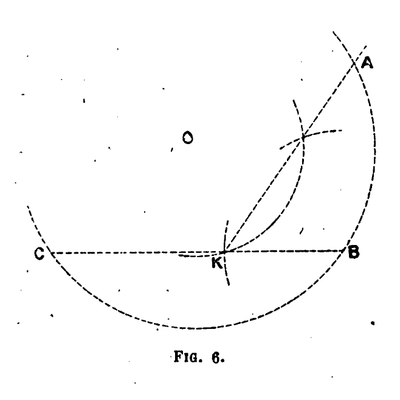

Problem XXXV: Mean Proportional Between Two Segments¶
Émile Lemoine — La Géométrographie (English Translation, pp. 24–27, fols. 0040–0043)
Problem XXXV (Euclid II.14 / VI.13 — Construct the Mean Proportional :math:`X = sqrt{M cdot N}` Between Two Given Segments :math:`M > N`). Lemoine audits five distinct methods across four pages (pp. 24–27), demonstrating dramatically how textbook favorites can lag ten full operations behind the true optimum:
Methods (a) & (b) — Classical Right-Triangle Altitude & Circle Tangent (pp. 24–25): Even after reusing \(A(M)\) to find the midpoint of diameter \(AC\), the classical semicircle altitude (a) costs \(4R_1 + 3R_2 + 10C_1 + C_2 + 6C_3\) (\(S = 24, E = 15\), 3 lines, 6 circles), and the classical secant-tangent method (b) costs \(4R_1 + 3R_2 + 12C_1 + C_2 + 7C_3\) (\(S = 27, E = 17\), or \(S = 25\) with two compasses). Contrary to Rouché et de Comberousse (1re partie, p. 152), both classical methods are nearly equivalent—and both are very poor graphically!
Methods (c) & (c₁) — The Optimal Lemoine–Gouzy Construction (:math:`S = 14, E = 9`, p. 25): Trace an arbitrary line \(AB\) (\(R_2\)), lay off \(AB = M\) via \(A(M)\) (\(2C_1 + C_2 + C_3\)), sweep \(B(N)\) cutting segment \(BA\) internally at \(C\), and with the same radius \(N\) sweep \(C(N)\) cutting \(B(N)\) at \(P, Q\) (\(4C_1 + 2C_3\)). Trace perpendicular bisector \(PQ\) (\(2R_1 + R_2\)) cutting \(A(M)\) at \(H\): because \(BH\) projects onto \(BC/2 = N/2\) inside circle \(A(M)\) of radius \(M\), similar isosceles triangles yield \(BH = \sqrt{M \cdot N}\)!
Lemoine generously credits Edm.-Auguste Gouzy of Lausanne (Nouvelles Annales, 1857, p. 125) for first stating the underlying geometric idea (which gave \(S = 15\) in Gouzy’s verbal order, refined by Lemoine to \(S = 14\), cutting classical \(S = 24\) by 42% and halving the circle count from 6 to 3, XXXV — Mean Proportional (Geometric Mean) of Two Segments).
f. 0042 · p. p. 26Method (d) — Chord-Reflection Synthesis (FIG. 6, p. 26, :math:`S = 18`): Draw an arbitrary circle OOB of radius larger than \(M/2\) carrying chord CB \(= M\), mark K on CB with \(BK = N\), reflect K across radius \(OB\) using BN and OOK, and draw the perpendicular chord KA cutting OOB at A: by similar right/isosceles triangles, AB \(= \sqrt{M \cdot N}\)!


Method (e) — Léon Colette’s 1892 Symmetric Chord Synthesis (FIG. 7, p. 27, :math:`S = 18`): From top point A of circle OOA, strike equal chords AB \(= AC = M\) and smaller arcs AN marking D on AB and E on AC (and FG on the circle). The horizontal transversal DE intersects circle OOA at M and N, yielding AM \(= AN = \sqrt{M \cdot N}\)!